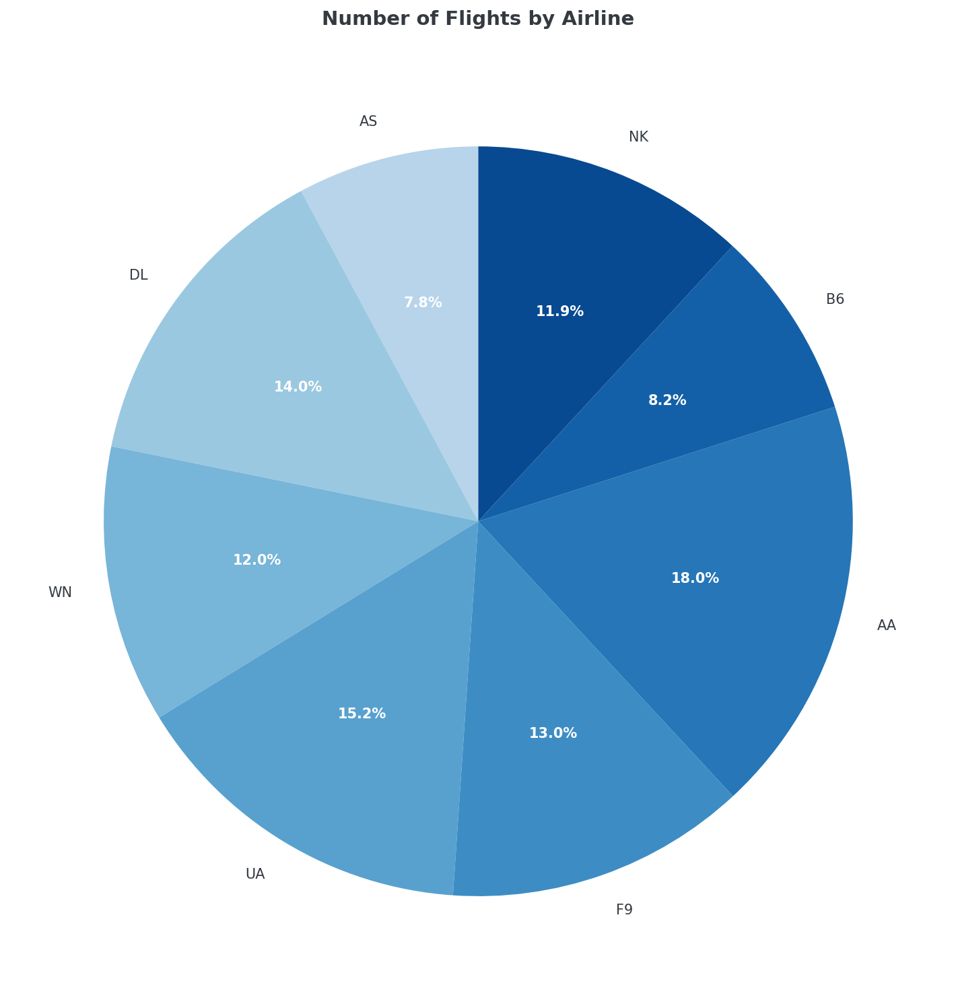
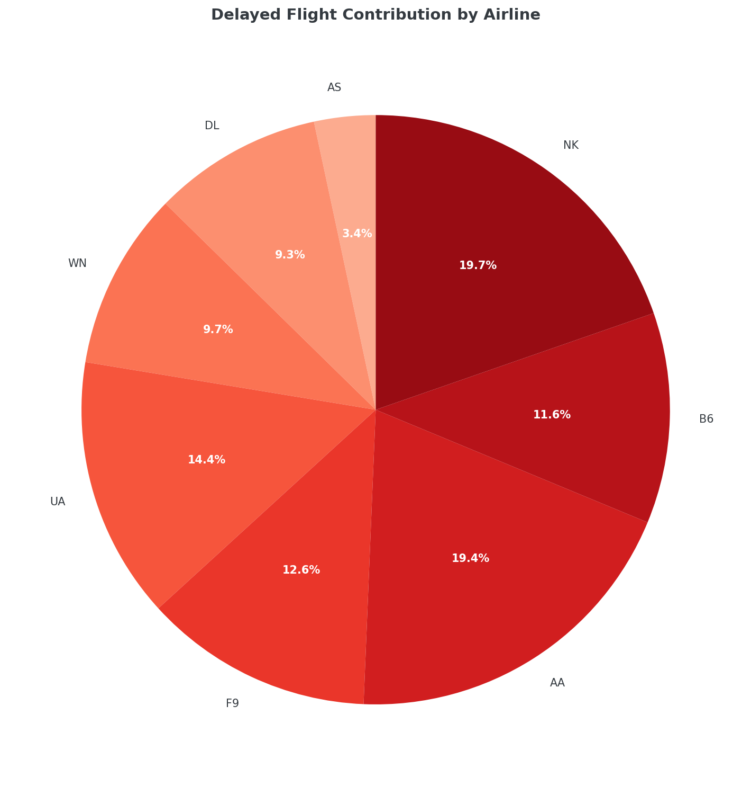
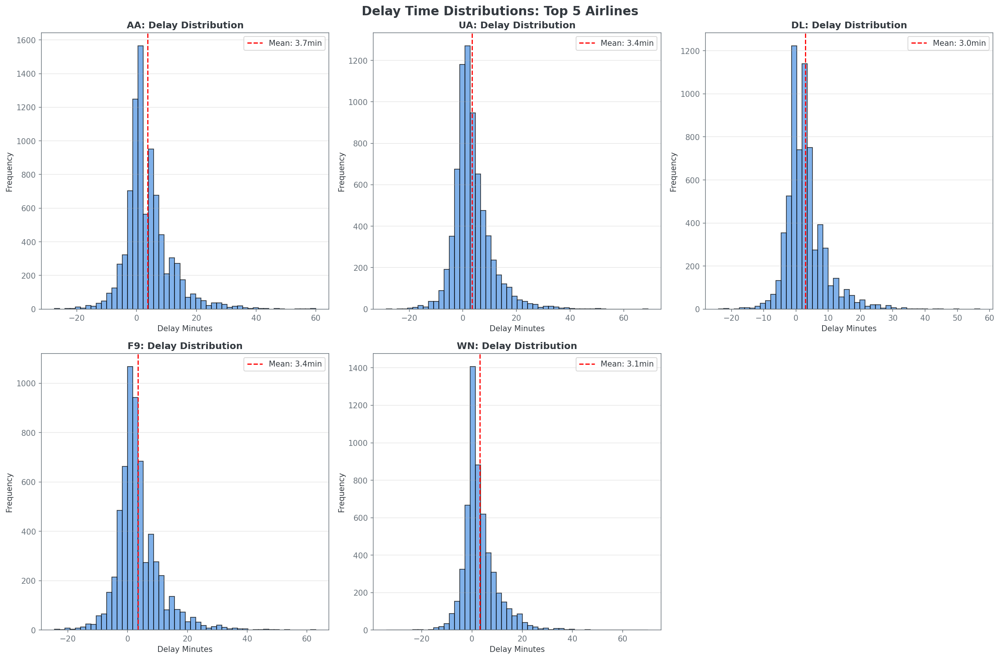
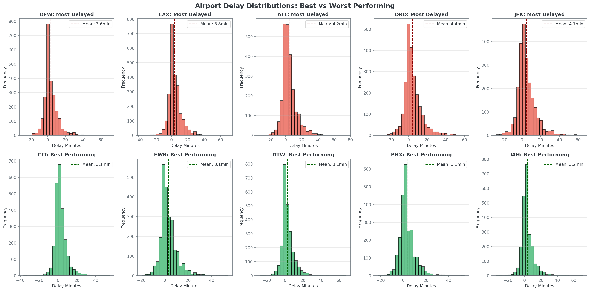
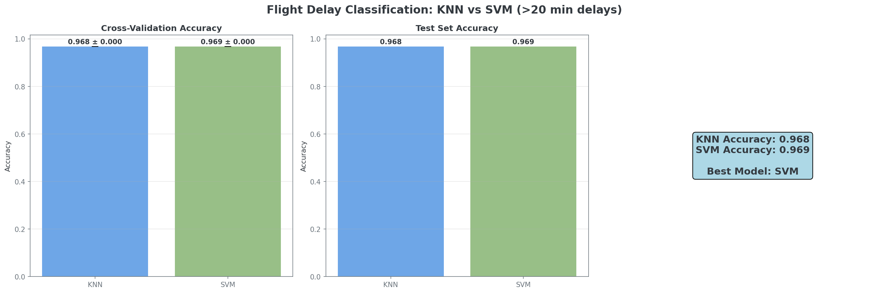

Overall Airline Performance
Number of Flights by Airline
Distribution of total flights operated by each airline in the dataset.
Delayed Flight Contribution by Airline
Each airline's contribution to the total number of delayed flights.
Airline-Specific Analysis
Delay Time Distributions
Top 5 Airlines: Delay Distribution Patterns
Histogram analysis of delay times for the five largest airlines, showing distribution patterns and mean delay times. Most flights experience minimal delays, with long-tail distributions indicating occasional significant delays.
Airport Performance: Best vs Worst
Comparison of delay distributions between the best and worst performing airports. Top row shows airports with highest average delays, bottom row shows best performers.
Delay Prediction Models
KNN vs SVM Classification Performance
Comparison of K-Nearest Neighbors and Support Vector Machine algorithms for predicting flights with delays exceeding 20 minutes. Models evaluated using cross-validation and independent test set performance.
Model Performance Summary
Key Insights
Airline Performance Variability
Delay rates vary significantly across airlines, ranging from approximately 20% to 35%. This variation suggests operational efficiency differences and potential areas for improvement.
Hub Airport Impact
Major hub airports tend to experience higher delay rates due to increased traffic volume and complexity of operations. Smaller airports often demonstrate better on-time performance.
Seasonal and Time Patterns
Delay patterns show clear seasonal variations and time-of-day effects, with peak travel times and weather-sensitive months showing increased delay frequency and duration.
Predictive Modeling Results
Machine learning models achieve reasonable accuracy in predicting significant delays, with SVM slightly outperforming KNN. Route, time, and airline factors are key predictors.